Reino Unido
Reino Unido
La ruta de Reino Unido: 3 regiones, 12 monumentos. Cada monumento se construye en tres fases.
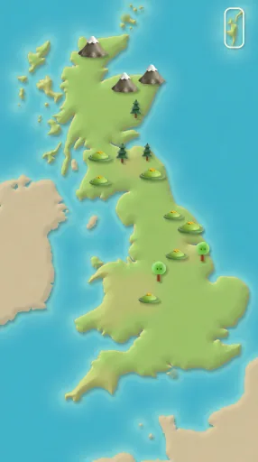
Londres
Pasos de ruta 1–12
Torre del reloj Big Ben
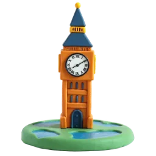
Fase 1 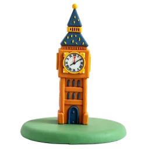
Fase 2 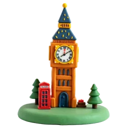
Fase 3 Big Ben es en realidad el nombre de la gran campana, que pesa unas 13,7 toneladas. La torre se terminó en 1859. Fuente: Wikipedia
Puente de la Torre
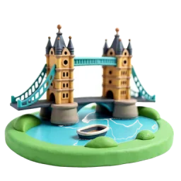
Fase 1 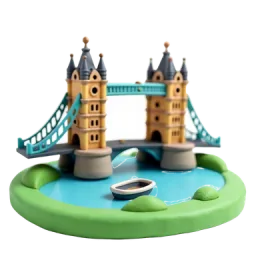
Fase 2 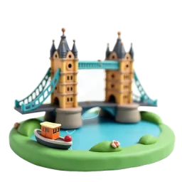
Fase 3 Inaugurado en 1894, el centro del puente se divide en dos y se levanta para dejar pasar a los barcos altos. Fuente: Wikipedia
Torre de Londres
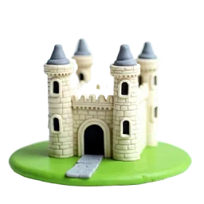
Fase 1 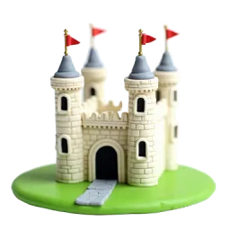
Fase 2 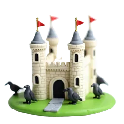
Fase 3 La Torre Blanca, que da nombre al castillo, se construyó en 1078. Hoy aquí se guardan las joyas de la Corona. Fuente: Wikipedia
Gran noria junto al Támesis
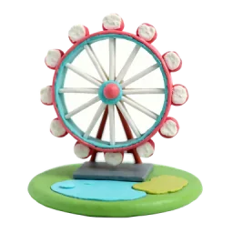
Fase 1 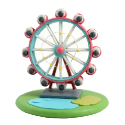
Fase 2 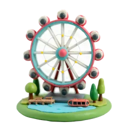
Fase 3 Esta gran noria junto al Támesis mide 135 metros. Cuando abrió en 2000, era la noria más alta del mundo. Fuente: Wikipedia
Windsor · Oxford · Cambridge
Pasos de ruta 13–24
Castillo de Windsor
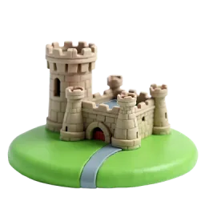
Fase 1 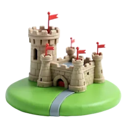
Fase 2 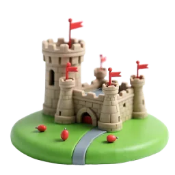
Fase 3 Reyes y reinas usan el castillo de Windsor desde el siglo XII: es el palacio habitado durante más tiempo en Europa. Fuente: Wikipedia
Radcliffe Camera
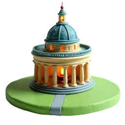
Fase 1 Fase 2 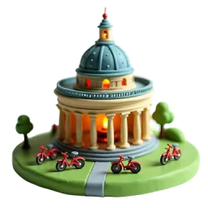
Fase 3 Este edificio redondo se construyó como biblioteca entre 1737 y 1749. Hoy es una sala de lectura de Oxford. Fuente: Wikipedia
Barcas de Cambridge
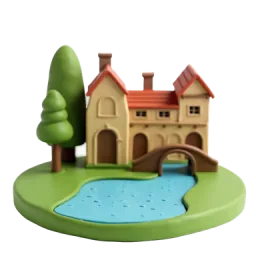
Fase 1 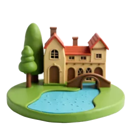
Fase 2 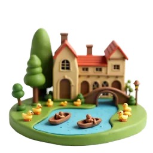
Fase 3 Una batea es un bote de fondo plano. Se mueve empujando una pértiga larga contra el fondo del río; en Cambridge pasea a turistas. Fuente: Wikipedia
Invernadero de Kew Gardens
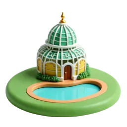
Fase 1 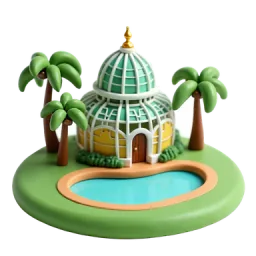
Fase 2 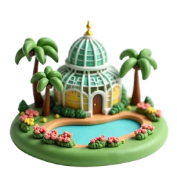
Fase 3 La Casa de las Palmeras de Kew se construyó entre 1844 y 1848. Fue el primer gran uso estructural del hierro forjado. Fuente: Wikipedia
Stonehenge · Bath
Pasos de ruta 25–36
Stonehenge
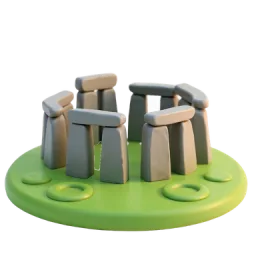
Fase 1 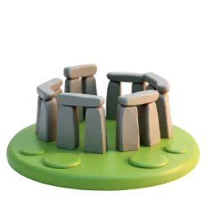
Fase 2 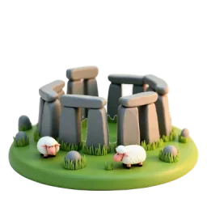
Fase 3 El gran círculo de piedras se levantó entre 2600 y 2400 a. C. Está alineado con el amanecer del solsticio de verano. Fuente: Wikipedia
Termas romanas de Bath
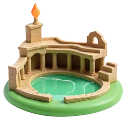
Fase 1 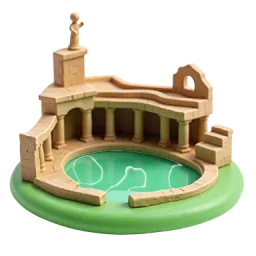
Fase 2 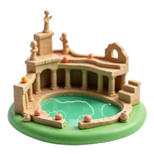
Fase 3 Cada día brotan aquí unos 1,17 millones de litros de agua caliente a 46 °C. Fuente: Wikipedia
Puente Pulteney
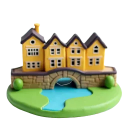
Fase 1 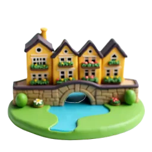
Fase 2 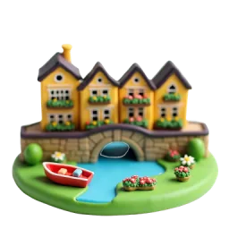
Fase 3 Terminado en 1774, es uno de los cuatro puentes del mundo con tiendas a ambos lados en toda su longitud. Fuente: Wikipedia
Aldeas de piedra de los Cotswolds
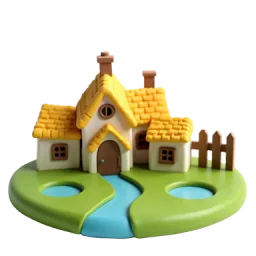
Fase 1 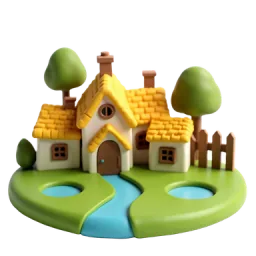
Fase 2 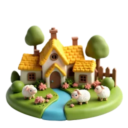
Fase 3 Las casas de los pueblos son de piedra caliza dorada de los Cotswolds. En la Edad Media, la zona se enriqueció con la lana. Fuente: Wikipedia